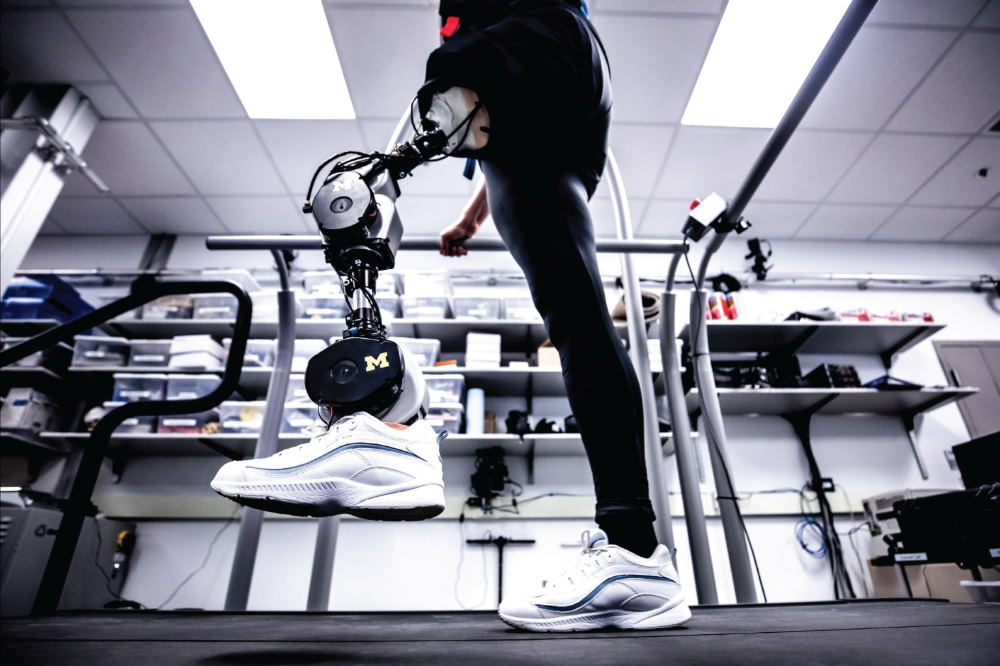

Project / Powered Prosthetic Leg
A leg that reads intent & answers with motion
WeRoCon builds an EMG-driven, motor-actuated transtibial prosthesis — fusing inertial sensing, closed-loop motor control, and a custom mechanical linkage into a single wearable system designed at IIT Jodhpur.
FIG. 01 — TEST RIG, ACTUATED ANKLE-FOOT MODULE
